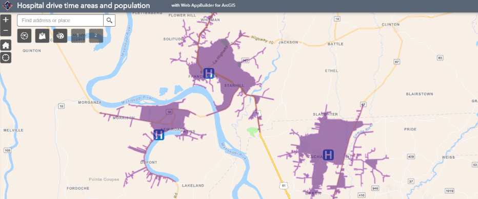
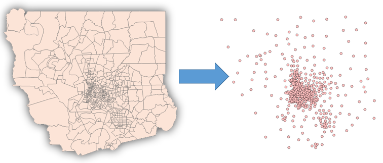
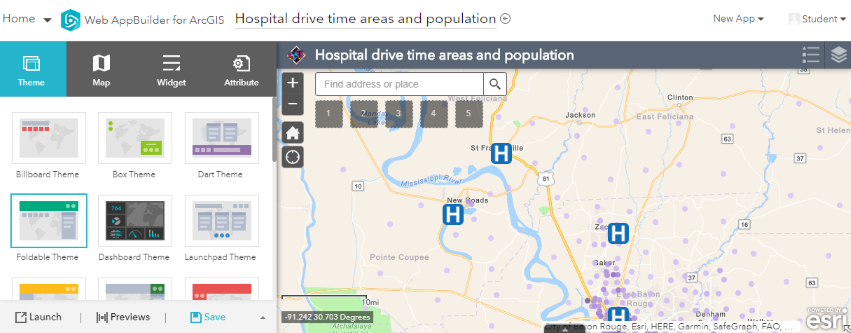
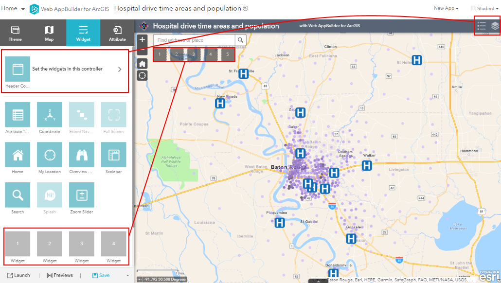
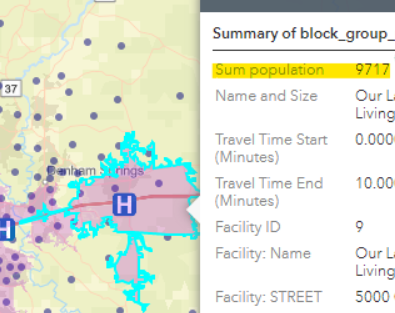
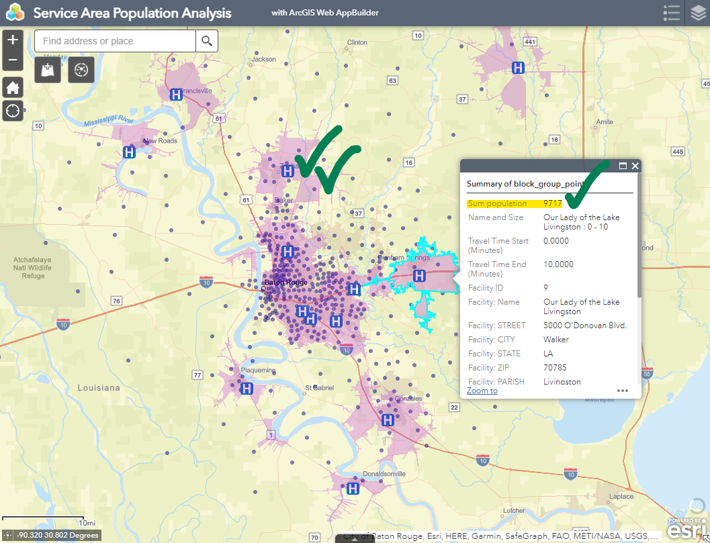
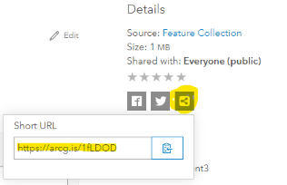

Assignment 6
Geoprocessing
Use ArcGIS Online to perform spatial analysis. Map the population of Baton Rouge, then create an app to analyze how many people live within 10 minutes of a hospital. The app will allow you to add different layers to create different analyses: how many people live within a 5-minute walk of a Taco Bell, 15-minute drive of a library, etc.
Table of Contents
Finished Example

Only a screenshot is provided instead of an embedded app because the Analysis Widget requires sign-in and the app is not public.
Data
This assignment uses feature layers already hosted in ArcGIS Online. Your app will use the population layer below, but in the Try It section you will run an analysis on a layer you find. Keep in mind that for layers to work with the analysis tools in this exercise:
- Only use point layers of the type “Feature Layer (hosted)”; no tile layers.
- Avoid layers with too many features (hundreds), which could consume too many credits to analyze.
Population layer
Title: Baton Rouge MSA Block Group Points
Geometry type: Points
Summary: Centroids of census block groups within the Baton Rouge Metropolitan Statistical Area, including 2010 U.S. Census demographic information and 2018 population estimates. This layer provides population data as points so the layer can be used in the “Summarize Within” tool to count population within a polygon.
Service URL: https://services9.arcgis.com/SDQDNhpG8jikA0D1/arcgis/rest/services/Baton_Rouge_MSA_Block_Group_Points/FeatureServer

Block group polygons were converted to points to easily use them in the Summarize Within tool during our analysis. Each point has a population attribute for the number of people living in that area according to the 2018 population estimates.
Example layer: Hospitals
Title: Baton Rouge MSA Emergency Rooms 2020
Geometry type: Points
Summary: Hospitals offering emergency services in the Baton Rouge Metropolitan Statistical Area as of March 2020.
Service URL: https://services9.arcgis.com/SDQDNhpG8jikA0D1/arcgis/rest/services/Baton_Rouge_MSA_Emergency_Rooms/FeatureServer
Steps
Part 1: Create a map
- Go to the ArcGIS Online Map Viewer to create and save a new map called “Baton Rouge Population Block Groups”.
- In the map viewer, click
Add>Add Layer from Web, paste the service URL for the population layer. - Change the layer symbols and basemap if desired.
- Save the map and share it with everyone to begin creating a new web app. Even though the analysis tools we will use in this exercise cannot be used by public users, your app will still be viewable by your instructor.
- In the
Create a New Web Appbox, click theWeb AppBuildertab and name the appService Area Population Analysis. ClickGet Started.
Part 2: Create an app
-
You should now see Web AppBuilder, which lets you create ArcGIS Online apps with more flexibility than the configurable apps we’ve used in previous assignments.

The initial view of Web AppBuilder. - Note the four main tabs on the left side of the page:
- Theme: changes the layout and colors of your app. This can affect how many widgets you can add.
- Map: edits the map displayed in your app or selects a different one.
- Widget: adds tools to the app.
- Attribute: changes additional options.
-
Click the
Widgettab. Widgets are tools that let the user interact with the app and map, e.g., zoom, view attribute table, view the map legend, and perform analyses. In the defaultFoldable Theme, there are two areas where additional widgets can be added.

This is the widget tab of Web AppBuilder showing possible widget areas, with red boxes showing where widgets will appear in the app when added to different widget areas. - On the
Widgettab, click the gray box at the bottom for Widget 1. This will show all of the available widgets. Click theAdd Datawidget andOK. This will allow you to add a layer while using your app. - Click the next widget slot and click
Analysis. - You should now see the
Configure Analysisoptions, where you can choose specific analysis tools to allow in the widget (see Perform Analysis for details on each tool). - Check the boxes for:
- Create Drive-Time Areas
- Summarize Within
- Click the settings icon for each of the tools above and check
Allow to export results - Click
OKto add the widgets to the app, then clickSave. Widget settings will not be saved until you clickSave. - Now you can launch the app.
Part 3: Run analysis
- After launching the app, click the
Add Datawidget, go to theURLtab, and paste the service URL of the Baton Rouge MSA Emergency Rooms layer to add hospital locations to the map:https://services9.arcgis.com/SDQDNhpG8jikA0D1/arcgis/rest/services/Baton_Rouge_MSA_Emergency_Rooms/FeatureServer
You should see hospital locations added to the map. - Now open the
Analysiswidget. Click theCreate Drive-Time Areastool. In the configuration, set:- Choose point layer to calculate drive-time areas around: hospitals (emergency rooms) layer
- Measure:
Driving Time,10,minutes - Travel direction:
Towards Facility - Areas from different points:
Overlap - Use current map extent: checked, but make sure you can see all points on your map
- Click
Show creditsto make sure the credit usage is reasonable (6.5 credits for 13 hospitals in this example).The next step will consume your ArcGIS Online account's credits. Use the `Show credits` link each time you run the tool to ensure you will not use all of your 500 allocated credits. Check your balance in your account settings on ArcGIS Online. - Click
Run Analysis. - When the task completes, close the analysis tool and view the results on the map. You will see asymmetric polygons around each hospital location, representing the area for which a drive to the hospital would take 10 minutes or less.
- Now we need to count the population within those drive-time polygons. Click the
Analysiswidget again and this time choose theSummarize Withintool with the following settings:- Choose the polygon layer: your drive-time polygons layer
- Choose a layer to summarize: population points layer
- Count of points: unchecked
- Add statistics from the layer to summarize:
POP2018,Sum - Result layer name: Hospital Service Area Population
- Use current map extent: checked, but make sure you can see all points on your map
- Check the credit usage, run the analysis, and once the task completes, close the
Analysiswidget. - On the map, click one of the polygons in the new Hospital Service Area Population polygons (you can hide the old polygon layer using the Layer List widget). In the popup, there should be a new field added:
Sum population. This is the number of people who live within a 10-minute drive of that hospital.

“Sum population” is the total number of people living within a 10-minute drive of this hospital.
Try it
-
Calculate the service area population for a different layer besides hospitals. This could be your points of interest from Assignment 3 or any layer you find in ArcGIS Online. You can either paste the service URL like we did in the steps above, or use the search box in the
Add Datawidget within your app. For example, you could search forTaco Belland add the layer in the results from EsriMedia. Make sure you are zoomed into the Baton Rouge area so you do not run the analysis nationwide. -
Optional: add the Draw widget to your app so you can calculate a drive-time area for any point you click on the map.
-
Take a screenshot of your app showing:
a. Your chosen locations layer (restaurants, etc.)
b. Service area polygons
c. Popup of one service area polygon showing the sum population

Your screenshot should show your point and polygons layers and a popup with the population for one of the service areas. - Find the service area polygons layer with population in your Content and go to its Item Details page. Fill out the fields:
a. Title
b. Thumbnail using your screenshot
c. Summary
d. Description (<200 words):- Explain what the layer is, how it was created.
- Give example population count for one of your locations, e.g., “Our Lady of the Lake Livingston has a 10-minute drive service area population of 9,717.”
- Link to your app.
e. Terms, such as “None” or “CC BY-SA”.
f. Credit the source of any data used to generate your layer
- Copy the link to your layer’s Item Details page using the social icons on the right side of the page:

Get the link to your Item Details page by clicking the Link icon.
Checklist
- Item Details page with basic info for the feature layer of the service areas you generated with your app.
- Thumbnail showing point and polygon layers and popup with population field.
- Description of the layer and how it was generated.
- Example population for one of your locations, given in the Description.
- Link to your app in the Description.
Submit
- The URL to the Item Details page of your feature layer. Example:
https://www.arcgis.com/home/item.html?id=ABC123orhttps://arcg.is/ABC123